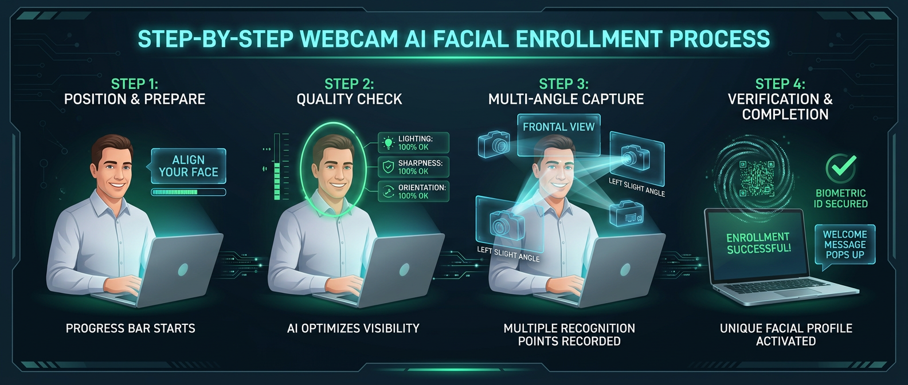

مدیر و کارفرمای گرامی، خوش آمدید!
از حسن انتخاب و اعتماد شما به سامانه هوشمند تشخیص چهره سرمد سپاسگزاریم. این سامانه با فناوری هوش مصنوعی در لبه (On-Device Face AI)، ترددهای سازمان شما را بدون نیاز به دستگاههای حجیم و پرهزینه، با دقت صدم ثانیه و قابلیت ثبت آفلاین مدیریت میکند.
نقشه راه راهاندازی سریع در ۴ گام
ورود به پنل و تعریف شیفتهای کاری سازمان
پس از ورود به پنل کارفرما، شیفتهای کاری مجموعه را متناسب با زمانبندی شرکت خود تعریف کنید:
- از منوی کناری به بخش «شیفتها» بروید و دکمه «افزودن شیفت جدید» را بزنید.
- ساعت ورود (مثلاً
08:00) و ساعت خروج (مثلاً16:30) را مشخص کنید. - فرجهٔ مجاز تأخیر صبحگاهی (مثلاً ۱۵ دقیقه) و زمان استراحت ناهار (۳۰ دقیقه) را تعیین و ذخیره فرمایید.
ثبت مشخصات و پرونده پرسنل
از منوی «پرسنل» روی دکمه «افزودن پرسنل جدید» کلیک فرمایید:
- نام، کد پرسنلی، شماره تماس و کد ملی کارمند را وارد کنید.
- شیفت کاری ایجاد شده را به کارمند منتسب نمایید.
- نوع قرارداد (تماموقت، پارهوقت یا پروژهای) را انتخاب و ذخیره کنید.
ثبت چهره ۳ بعدی با وبکم (Face Enrollment)
مهمترین و جذابترین بخش سامانه! دیگر نیازی به آپلود عکس قدیمی یا فایل نیست؛ هوش مصنوعی چهره را زنده ثبت میکند:

- در صفحه پرسنل روی دکمه آبیرنگ «ثبت چهره پرسنل» کلیک کنید.
- وبکم لپتاپ یا دوربین گوشی روشن شده و کادر بیضی راهنما نمایش داده میشود.
- کارمند روبروی دوربین میایستد. سیستم ۳ زاویه باکیفیت را در چند ثانیه ثبت و ذخیره میکند.
فعالسازی دستگاه کیوسک در ورودی شرکت
هر تبلت، گوشی هوشمند یا کامپیوتر در ورودی دفتر شما، تبدیل به دستگاه هوشمند تردد میشود:
۱. دریافت کد کیوسک
در پنل مدیر به بخش «دستگاهها» رفته و یک کد فعالسازی ۱۰ رقمی دریافت کنید.
۲. باز کردن روی تبلت
روی تبلت آدرس /device را باز کرده و کد ۱۰ رقمی را بزنید.
۳. تردد سریع ۰.۴ ثانیهای
کارمندان با ایستادن جلوی تبلت و لمس دکمه ورود/خروج تردد خود را ثبت میکنند.
مشاهده ترددها و خروجی اکسل برای حسابداری
محاسبات حقوق، اضافهکار، کسر کار و مرخصیها با یک کلیک آماده تحویل به واحد مالی است:
- به منوی «گزارشها» رفته و بازه زمانی دلخواه (مثلاً ماه جاری) را انتخاب کنید.
- روی دکمه «خروجی اکسل (.xlsx)» کلیک نمایید.
- فایل اکسل راستبهچپ، دارای ستونهای تفکیکشده (حضور، تأخیر، اضافهکار و مرخصی) در اختیار شماست.
پرسشهای متداول مشتریان (FAQ)
آیا امکان تقلب با قرار دادن عکس یا گوشی جلوی دوربین وجود دارد؟
خیر؛ سیستم با تحلیل بافت تصویر و هندسه دقیق زوایای صورت مانع از پذیرش تصاویر دوبعدی یا بیکیفیت میشود.
اگر پرسنل مرخصی یا مأموریت ساعتی داشته باشند چگونه ثبت میشود؟
مدیر در بخش «مرخصیها» میتواند مرخصی روزانه یا ساعتی را ثبت کند و سیستم آن را از محاسبات جریمه کسر کار کسر مینماید.
آیا امکان داشتن چند شعبه و چند دستگاه وجود دارد؟
بله؛ میتوانید به تعداد نامحدود دستگاه کیوسک برای شعب و درهای ورود/خروج مختلف تعریف نمایید.